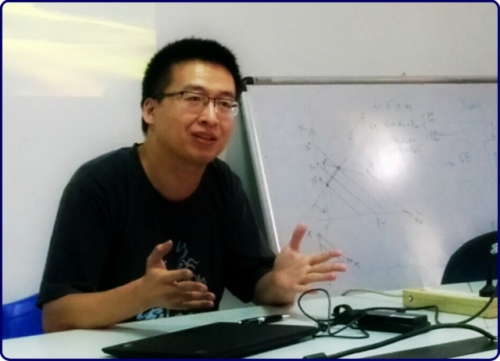

Welcome to Guangchao Geng's homepage!
Guangchao Geng is a Postdoctoral Research Fellow at the College of Electrical Engineering, Zhejiang University, China. He received his B.S. with Chu Kochen Honor and Ph.D. in electrical engineering from Zhejiang University, China, in 2009 and 2014, respectively. His doctoral advisor is Dr. Quanyuan Jiang. From 2012 to 2013, he was a visiting Ph.D. student in the Department of Electrical Engineering at Iowa State University, United States, sponsored by the joint Ph.D. program from China Scholarship Council, collaborating with Dr. V.Ajjarapu.
His research interests include power system stability and control, renewable energy integration, numerical analysis and optimization, and high performance computing.
Please contact me for my complete Curriculum Vitae.
Contact Information: Room 203, No.2 Academic Building, College of Electrical Engineering, Yuquan Campus, Zhejiang University, Zheda Road #38, Hangzhou, Zhejiang 310027, China.
Email: ggc[at]zju[dot]edu[dot]cn
Website: www.genggc.org